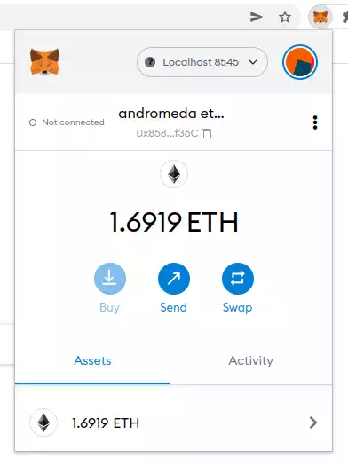

Go up to the CCC HW page (md)
Overview
You are going to create a web interface for the Auctioneer contract
you created in the dApp Auction (md) assignment. This web interface will
allow for the creation of NFTs and the ability to start and stop
auctions, as well as bidding on running auctions.
Changelog
Any changes to this page will be put here for easy reference. Typo
fixes and minor clarifications are not listed here. So far there aren’t
any significant changes to report.
Pre-requisites
Writing this homework will require completion of the following
assignments:
Setup: Auctioneer
We are going to use your Auctioneer contract, from the dApp Auction (md) assignment. You will also need your
NFTmanager contract, from the Ethereum
Tokens (md) assignment, as well. If
you did not get yours working, then contact the course staff, and we can
deploy them for you to use.
Before you deploy yours, however, we need to make a few changes to
our Auctioneer.sol contract. We recommend saving this updated version in
a separate file, such as Auctioneer_v2.sol.
Change 1: The first change is due to an imprecise
specification in the dApp Auction
(md) assignment. The change is this:
all monetary amounts should be in wei. This
includes:
- The
reserve and highestBid fields of the
Auction struct
- The return value of
fees() (which is probably just a
getter function from a public variable)
- The
_reserve parameter to
createAuction()
To make this change, check for each time you modify those fields of
the Auction struct, for how you store it in
fees, and the code in the createAuction()
function.
Change 2: To make everybody’s lives easier, each
Auctioneer contract will deploy it’s own NFTmanager. We saw how
this was done in the testing section of the DAO & web3 (md) assignment. This way we won’t have to
pass in the address of the NFT manager every time we want to deal with
an NFT which will make our lives easier. To make this change, add the
following as a public variable to your contract:
address public override nftmanager;
This will create an associated getter function as well. This
override is because it will override the updated
AuctionManager_v2.sol contract, which is provided below.
Also add the following line in your constructor; if you don’t have a
constructor, add one with just the following line:
nftmanager = address(new NFTmanager());
The rest of your Auctioneer code should be unaffected by this change.
The only time the NFTmanager address comes up is when it is read in
during the onERC721Received() function, and when it’s
stored in the Auction struct. But that code should work
just fine with this change – we are just going to be saving that same
NFTmanager in all the Auction structs. This is a bit of a
waste of gas, but it simplifies our modifications for this assignment.
And gas is free for us in this course.
Change 3: We are going to add a method to the
Auctioneer to mint an NFT, which it does by calling the NFTmanager’s
mintWithURI() method. Add the following code:
address public override nftmanager;
mapping (address => uint) public override lastMintedNFT;
function mintNFT (string memory uri) public override returns (uint) {
uint ret = NFTmanager(nftmanager).mintWithURI(msg.sender,uri);
lastMintedNFT[msg.sender] = ret;
return ret;
}
function tokenURI(uint tokenID) public view override returns (string memory) {
return NFTmanager(nftmanager).tokenURI(tokenID);
}
The mintNFT() function allows us to create a new NFT
without having to interact with the NFTmanager contract, which will
simplify the work we have to do below. This assumes that the NFT is
being minted for the sender, which is a reasonable assumption in this
case. As mentioned in the Arbitrage
trading (md) assignment, it’s
challenging to obtain the return value of a transaction, so we save the
just minted NFT ID in the lastMintedNFT mapping, which we
can then read via a regular call. (This means if you mint two NFTs in
succession, without getting the ID of the first before you mint the
second, then you won’t know the ID of the first; we are going to
carefully ignore this case for simplicity). The tokenURI()
just passes the call to the NFTmanager – having this function here
allows us to not have to interact with two smart contracts, as the
Auctioneer will forward that request on for us. This uses up more gas,
but will make it much simpler for us in this assignment.
Change 4: As a result of these changes, your
Auctioneer_v2.sol contract will now support the updated AuctionManager_v2.sol (src) interface. Other than changing a
few comments (changing all ‘gwei’ instances to ‘wei’), the changes for
this assignment are the first few lines of the contract. In particular,
your contract line should be contract Auctioneer_v2 is
AuctionManager_v2 {. In addition to implementing the above
functions, this means you have to change your import
"AuctionManager.sol"; line to import
"AuctionManager_v2.sol";. Your supportsInterface()
function will have to support the new interface (you don’t have to
indicate support of the old AuctionManager.sol interface, just the new
AuctionManager_v2.sol interface). The ABI for that interface can be
found in the AuctionManager_v2.abi
file. Although you likely won’t need it, you can get the link for the
NFTmanager ABI as well; it’s actually the ABI for the IERC721full
interfaceP: IERC721.abi.
Finalizing: Once that modification is done, you
should deploy your Auctioneer_v2.sol contract to the blockchain. Save
the contract address, as it will be needed below.

This assignment uses the MetaMask
extension to Google Chrome. Unfortunately, it does not run in any other
browser; meaning you can’t use Firefox, Safari, Edge, or Internet
Explorer. You have to use Chrome for this assignment.
Here are the MetaMask setup steps:
- If you haven’t already, install Google Chrome
- Install the MetaMask
extension
- Obtain your decrypted private key for the account that you want to
use. This was done in Part 4 of the Private Ethereum Blockchain (md) assignment, and you also used that in
the Arbitrage trading (md) assignment. It will be a hex value
of the form
0123456789abcdef0123456789abcdef0123456789abcdef0123456789abcdef
- Start your geth node. Among any other flags that you are using, you
need to supply the
--http flag when you start geth
- Configure MetaMask. To do so, click on the MetaMask icon
(
 )
next to the address box. You will see something similar to the image to
the right. Sometimes there is a noticeable delay when clicking that icon
before the pop-up windows appears.
)
next to the address box. You will see something similar to the image to
the right. Sometimes there is a noticeable delay when clicking that icon
before the pop-up windows appears.
- First we have to configure the connection to the blockchain. At the
very top of the MetaMask pop-up window is a networks drop-down – in the
image to the right it says “Localhost:8545”. In the list that appears,
if you DO see “localhost:8545”, then select it
- If you do NOT see “localhost:8545”, you will have to add it. Keep
“localhost:8545” as the network name, the RPC URL is
http://localhost:8545, the chain ID is provided on the
Collab landing page. The click “add network”.
- Does it not connect? Make sure you are running your geth node with
the
--http flag.
- Next we need to configure our account.
- Click on the circular icon in the upper-right of the MetaMask window
– in the image to the right it looks like:
,
but will likely look different in yours
- Click on “import account” (NOT create account!)
- Paste in your decrypted private key and click on ‘import’
- You should now see your balance in the account pop-up window
- You will likely want to rename the account – MetaMask just calls
them “account 1”, “account 2”, etc., and makes it hard to delete
“account 1”. To rename your account, in the MetaMask window in the image
to the right, click on the vertical ellipsis (⋮) to the right of the
account name, then click on “account details”, then click on the
pencil/edit icon to the right of the account name.
At this point, the MetaMask extension should be connected to your
account on the private Ethereum blockchain. Note that if you restart
Chrome, you may have to enter your password. Also, it will say “Not
connected” to the left of the account name – that’s fine for now, since
we have not yet created a web page for it to connect to.
The intent is for you to start with the web site that was provided to
you in the dApp Auction (md) assignment, and add some features.
The URL of that web site is on the Collab landing page – you can just
save that as a new HTML file, which you will want to name
auctions.html. You are going to create a few web forms,
each of which will call a different Javascript function. Those forms –
and paired functions – will perform the various actions that we need to
perform on the Auctioneer: minting new NFTs, starting a new auction,
closing an auction, and bidding on an auction.
We want to ensure that any viewer of this web page has MetaMask
properly installed. The following code will do that:
<script>
if ( window.ethereum === undefined )
window.alert("Please install MetaMask; this page will not work properly without that extension installed");
</script>
This is useful as it will give a warning to those using other
browsers, or those on Chrome without the MetaMask extension installed,
that the site won’t work properly. In a fully developed web site, we
would display the rest of the page differently if it is run without
MetaMask. For this assignment, you should just display that warning.
It’s fine for this assignment if the rest of your page does not display
correctly without MetaMask.
The first thing a user has to do is enable the MetaMask extension to
use the site; this is usually phrased as “connecting to MetaMask”. To do
this, we add the following code to our HTML file (adapted from here).
You can put this right after the <body> opening
tag.
<button class="enableEthereumButton">Enable Ethereum</button>
<script>
const ethereumButton = document.querySelector('.enableEthereumButton');
ethereumButton.addEventListener('click', () => {
// will start the metamask extension
ethereum.request({ method: 'eth_requestAccounts' });
});
</script>
This connection will persist through a page reload, and – on some
operating systems at least – will persist thorough a browser
restart.
The expectation is that any user will click on that button to connect
to MetaMask. You do not need to handle the case when a user tries to use
the rest of the page without first connecting via this button.
Web3.js library
We could interact with MetaMask directly, but using web3.js, which we
are familiar with, is going to make life much easier – it will do all
the encoding of parameters into calls, etc.
Previously, we defined the web3 variable as such
(URL is on the Collab landing page):
let web3 = new Web3('URL');
We are now going to add a line:
let web3 = new Web3('URL');
let web3mm = new Web3(window.ethereum);
You will notice that we are creating TWO connections to the
blockchain. The first connection is through the normal URL as was done
in the DAO & web3 (md) assignment and as is done in the
auctions.php page that you are basing your code off of; that URL is on
the Collab landing page. The second connection is through MetaMask,
which injects the window.ethereum object, and Web3.js can
just connect via that.
The reason we are doing two connections is because the first one
supports subscriptions, which is what allows the table to be updated
upon an event emission – you did that in the DAO & web3 (md) assignment, and the auctions.php does
that as well. However, that first connection does not allow sending
transactions to the blockchain. The second connection, which is through
MetaMask, does not support subscriptions (so no automatic updating of
the tables), but does allow sending transactions to the blockchain.
As both are wrapped in the Web3 constructor, they operate the same
way.
As a general rule, any one Javascript function should use only one of
those connections. If you are sending transactions to the blockchain,
you have to use the web3mm one. Otherwise, use the
web3 one. As you will only have four functions that send
transactions to the blockchain, only those four will use
web3mm.
HTML and Javascript
Below is an example HTML form and associated Javascript function.
This will call the mintNFT() function on your smart
contract.
<script>
const mintNFT = async() => {
try {
const eth_coinbase = await web3mm.eth.getCoinbase();
var str = document.getElementById('nftstring').value;
await auctionContract.methods.mintNFT(str).send({from:eth_coinbase, gas:1000000, gasPrice:100000000000});
const nftid = await auctionContract.methods.lastMintedNFT(eth_coinbase).call();
const nfturi = await auctionContract.methods.tokenURI(nftid).call();
window.alert("NFT ID: "+nftid+"\n"+ntfuri);
} catch (error) {
console.error(error);
}
}
</script>
<form onsubmit='return false;'>
<p>NFT URI / string: <input type='text' id='nftstring'></p>
<input type='button' value="mint!" onClick="mintNFT();">
</form>

There is a lot going on here, and you will need to understand it in
order to be able to adapt it for the other function calls that you need
to make.
- Notice that we are using the
web3mm connection, since
we are connecting through MetaMask.
- We define the
mintNFT() function which is an
async function; async functions were described
in the DAO & web3 (md) assignment. Note that while this
function has the same name as the mintNFT() function in the
smart contract, they are still different functions.
- One way to deal with
async functions is to give it a
code block to execute when the function returns. The other is to force
it to wait until the async function returns. We chose the
latter here by putting the await keyword in front of the
various async calls in that function. Note that
await can ONLY be called in an async function
(and in one other situation that does not apply to us here); this is a
Javascript restriction. Note that any variable that you
await for a value for must be a const.
- To get the user’s coinbase account address, we call
await
web3mm.eth.getCoinbase(); – that’s the account they are logged
into using MetaMask.
- The
auctionContract.methods.mintNFT(str) line is where
the transaction itself occurs. You will notice that this uses
send(), not sendTransaction(). So this is
similar to the geth commands we
know (md), but just
different enough to drive us up the wall learning a slightly different
syntax for how to call the transaction.
- For this assignment, keep the gas at 1 million and the gas price at
10 gwei (which is 10000000000 wei); yes, this is a lot of gas, but since
our ETH is free, we aren’t worried about it.
- Looking at the form, we see that the text box has an ID of
nftstring (3rd line from the bottom). The
document.getElementById('nftstring').value gets the value
currently typed into the text box.
- After
awaiting for the various function calls, we then
display the results via an alert box: window.alert("NFT ID:
"+nftid+"\n"+ntfuri);. A full fledged website would have a better
UI for displaying this, but an alert box is sufficient for us. We assume
the user will remember his/her NFT ID, and we do not have to handle the
case when they forget it.
- We put everything into a try-catch clause, as this will allow
printing out of the error if one occurs. You can view that in the
Javascript developer console.
- In the form, you will notice that the form tag has the value
onsubmit='return false;'. We want this entire web page to
do all the work, and we are not submitting a form (which will reload the
page). This clause prevents form submission from hitting Enter in the
text box.
- Also in the form, the button has
onClick="mintNFT();"
which will launch the mintNFT() Javascript function when it
is clicked.
- If you are familiar with HTML, you will notice that there is no
submit button, as we do not want the form to be submitted
(and cause a reload). If you are not familiar with HTML, and don’t know
what that means, you can ignore this bullet point.
When this function is called, MetaMask will pop up a window, such as
what is shown to the right, to verify that you really want to send that
transaction. This happens on the
auctionContract.methods.mintNFT(str) line, since that’s the
only line that is sending a transaction; the others are only
doing read-only calls. You will have to click ‘confirm’ for the
transaction to be sent to the blockchain.
Once it is confirmed, it will take a second or so for the transaction
to reach the P2P network, and then a second or two for it to be
auto-mined into the blockchain. However, MetaMask can take a while (5-10
seconds) to realize that the transaction has occurred. So it can easily
take 10 seconds for the pop-up window to appear.
The Task
Finally! We can get to the whole reason for this party.
Your task is to create a web interface to your Auctioneer.sol contract.
MAKE SURE IT’S THE UPDATED VERSION (that you developed above)! That
updated version was discussed in the “Setup: NFTmanager” section,
above.
As you are starting with the web site that was provided to you in the
dApp Auction (md) assignment, the read-only parts of
this assignment are already done for you. You will have to change the
contract ID, of course – you should hard-code that into your HTML /
Javascript code (just replace the one that is there).
For this assignment, you only need to create an interface with four
of your functions – createAuction(),
closeAuction(), placeBid(), and
mintNFT(). And the interface for mintNFT() was
provided for you, above. In particular, you do NOT have to create an
interface for cancelAuction(). We discussed how to create a
HTML form interface, and the Javascript code to make it work, above.
The forms for those three functions should be on that same page – in
particular, you will only be submitting one page, called
auctions.html (note the plurality of the filename!). You
can put those forms on the bottom, along with the MetaMask connect
button described above. As with the DAO
& web3 (md) assignment, since
this is not a course in user interfaces, it will not be graded on it’s
beauty. But it still has to be usable.
Any calls to the first three functions (createAuction(),
closeAuction(), placeBid()) will have that
change reflected in the table of auctions, which will automatically
update when an event is emitted. When mintNFT() is called,
it performs the transaction and then perform a web3.js call to get the
NFT ID. It just displays that ID via a popup alert box.
When this assignment is complete, anybody should be able to create
NFTs, initiate auctions, bid on existing auctions, and close auctions
when they are done. As for the NFT images, we will still provide just a
file name, and the URL prefix will be the same Collab link as in the Ethereum Tokens (md) assignment; that prefix is on the
Collab landing page.
Troubleshooting
- “Invalid sender” error when you are submitting a transaction: while
there are lots of things that could cause this, you will want to check
that your chain ID is set correctly. Click on the MetaMask fox icon
(),
then the circular account icon in the top right
(,
although your may look different), then Settings, then Networks, then
click on the “localhost:8545” network. Make sure the chain ID is set
correctly; it’s on the Collab landing page, if you forget what it is. It
should be set using it’s base-10 value.
Submission
There are four forms of submission for this assignment; you
must do all four.
Submission 1: You should submit just your auctions.html
contract to Gradescope. In particular, you are NOT submitting any
Solidity code for this assignment. NOTE: Gradescope
cannot fully test this assignment, as it does not have access to the
private blockchain. So it can only check that the right file has been
submitted.
Submission 2: You must deploy your Auctioneer smart contract (and
likely your NFTmanager smart contract) to our private Ethereum
blockchain. It’s fine if you deploy it a few times to test it.
Submission 3: You need to start a few auctions. Mint some NFTs, start
some auctions.
Submission 4: You will need to submit your information via a Google
form, the link to which is on the Collab landing page.